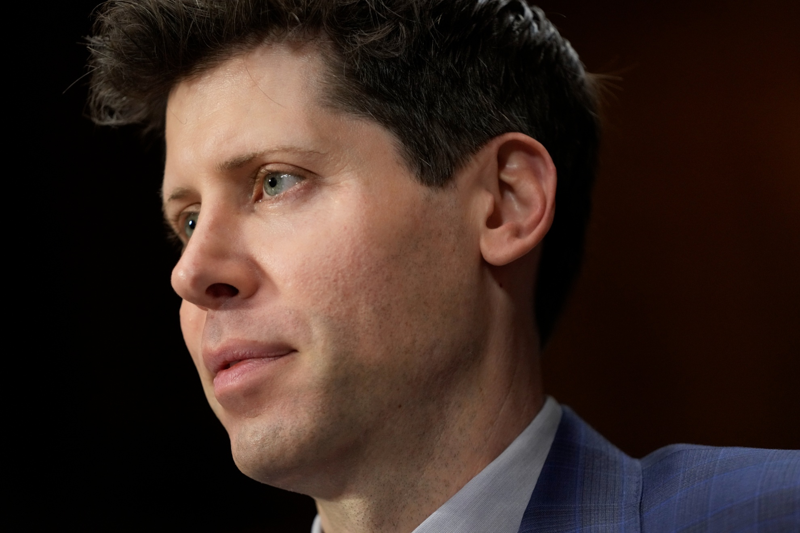

Samuel Harris Altman (Chicago, Illinois; 22 de abril de 1985), conocido como Sam Altman, es un empresario, inversionista, programador y bloguero estadounidense. Es director ejecutivo de OpenAI y expresidente de Y Combinator, y se le considera una de las figuras principales en el desarrollo de la inteligencia artificial

Altman creció en San Luis (Misuri), en una familia judía, como el mayor de cuatro hermanos. Su madre es dermatóloga y su padre era un agente inmobiliario. Recibió su primera computadora a la edad de ocho años. Asistió a la escuela secundaria John Burroughs y estudió Ciencias de la Computación en la Universidad de Stanford hasta que abandonó los estudios en 2005. En 2017, recibió un título honorario de la Universidad de Waterloo. También fue presidente de Y Combinator, donde ayudó a impulsar muchas startups tecnológicas. Actualmente es una figura importante en el mundo de la innovación y el desarrollo tecnológico.